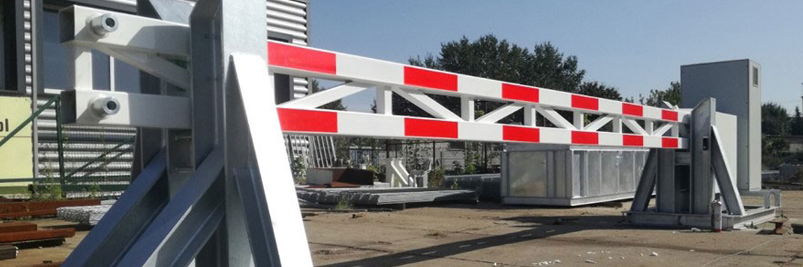
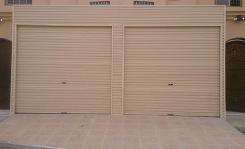

Control Who Enters.
Protect What Matters.
تحكم بمن يدخل.
احمِ ما يهم.
The First Line of Physical Access Control الخط الأول للتحكم الفعلي بالدخول
Security barriers and gates are the first line of physical access control — managing which vehicles and pedestrians enter your facility, recording movements, and creating deterrence against unauthorized access. الحواجز والبوابات الأمنية هي الخط الأول للتحكم الفعلي بالدخول — تُدير دخول المركبات والمشاة إلى منشأتك، وتسجّل التحركات، وتخلق رادعاً ضد الدخول غير المصرّح به.
We supply and install a complete range of access control hardware: from boom barriers for parking facilities to anti-terror bollards for critical infrastructure. نورّد ونُركّب مجموعة متكاملة من معدات التحكم بالدخول: من حواجز الذراع لمواقف السيارات إلى الدعامات المضادة للصدم للبنية التحتية الحيوية.

Find the Right Access Control Hardware اعثر على معدات التحكم بالدخول المناسبة

Boom Barriersحواجز الذراع
Fast, reliable vehicle access control for parking facilities and commercial sites. Boom barriers raise and lower in seconds, integrating with RFID, ANPR, or ticketing systems for high-throughput entry and exit points.تحكم سريع وموثوق بدخول المركبات لمرافق المواقف والمواقع التجارية. ترتفع الحواجز وتنخفض في ثوانٍ، وتتكامل مع أنظمة RFID أو ANPR أو التذاكر لنقاط دخول وخروج عالية الحركة.
Speed Gates & Turnstilesبوابات سريعة ودوّارة
Pedestrian access with seamless integration to card or biometric readers. Speed gates combine a fast, elegant passage experience with reliable anti-tailgating detection for offices, data centers, and secure facilities.دخول للمشاة بتكامل سلس مع قارئات البطاقات أو البصمات. تجمع البوابات السريعة بين تجربة عبور سريعة وأنيقة وكشف موثوق لمنع التسلل في المكاتب ومراكز البيانات والمنشآت الأمنية.

Security Bollardsالدعامات الأمنية
Fixed and retractable bollards for perimeter protection, available in crash-rated configurations for sites requiring vehicle-impact resistance — including government buildings and critical infrastructure.دعامات ثابتة وقابلة للسحب لحماية المحيط، متوفرة بتشكيلات مقاومة للصدم للمواقع التي تتطلب مقاومة لارتطام المركبات — بما في ذلك المباني الحكومية والبنية التحتية الحيوية.

Sliding & Swing Security Gatesبوابات منزلقة ومفصلية أمنية
Heavy-duty vehicle gates for compounds, industrial facilities, and residential communities — engineered for daily cycle reliability with intercom and access card integration.بوابات مركبات عالية التحمل للمجمعات والمنشآت الصناعية والمجتمعات السكنية — مصممة لموثوقية دورات التشغيل اليومية مع تكامل الاتصال الداخلي وبطاقات الدخول.
Integration-Ready Security أمان جاهز للتكامل
CCTV Integrationتكامل مع كاميرات المراقبة
Centralize monitoring of every access point.مراقبة مركزية لكل نقطة دخول.
Card & Biometric Accessدخول بالبطاقة والبصمة
Seamless integration with your credential system.تكامل سلس مع نظام بيانات اعتمادك.
Crash-Rated Optionsخيارات مقاومة للصدم
K4/K8/K12 standards for high-security sites.معايير K4/K8/K12 للمواقع عالية الأمان.
Intercom Integrationتكامل الاتصال الداخلي
Two-way communication at every entry point.اتصال ثنائي الاتجاه عند كل نقطة دخول.
Fast Throughputعبور سريع
High-cycle hardware that keeps traffic moving.معدات عالية الدورات تُبقي الحركة مستمرة.
24-Hour Maintenanceصيانة على مدار الساعة
Engineer response when access systems need it most.استجابة مهندسين عند أكثر الحاجة لأنظمة الدخول.
Where Security Barriers Excel أين تتميز الحواجز الأمنية
Security Barrier Questionsأسئلة عن الحواجز الأمنية
Ready for a security assessment?مستعد لتقييم أمني؟
No obligation. Our security solutions team responds within 24 hours.دون أي التزام. فريق الحلول الأمنية يستجيب خلال ٢٤ ساعة.